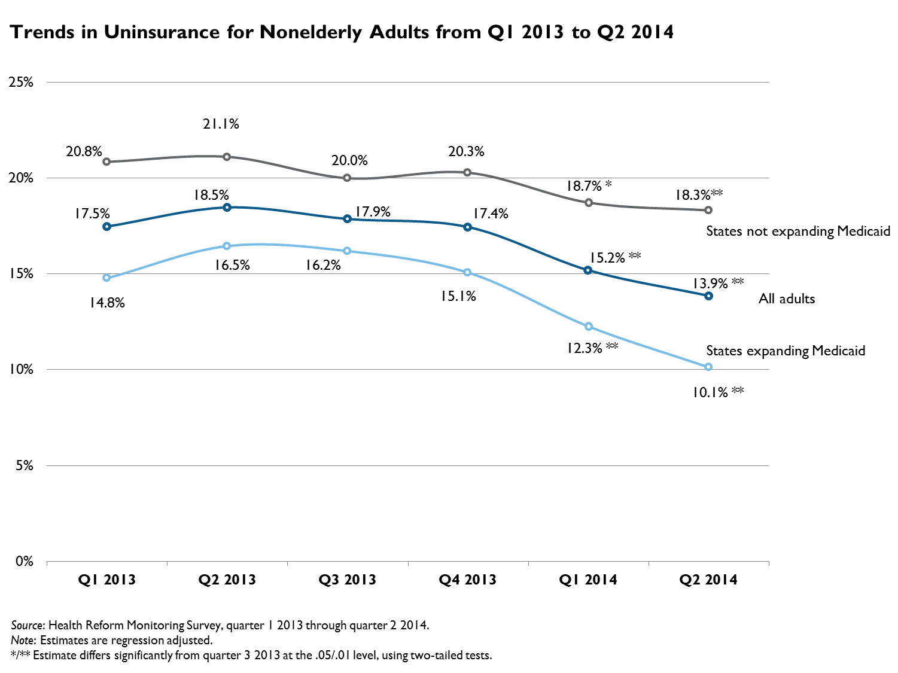

QuickTake: Number of Uninsured Adults Continues to Fall under the ACA: Down by 8.0 Million in June 2014
Sharon K. Long, Genevieve M. Kenney, Stephen Zuckerman, Douglas Wissoker, Adele Shartzer, Michael Karpman, and Nathaniel AndersonJuly 10, 2014
The Urban Institute's Health Reform Monitoring Survey (HRMS) has been tracking insurance coverage since the first quarter of 2013. This QuickTake reports on how the uninsurance rate changed through early June 2014. These results track changes in coverage following the Affordable Care Act’s (ACA) first open enrollment period, which ended on March 31, 2014.
Analysis of data from the June 2014 HRMS shows the uninsurance rate for nonelderly adults (age 18–64) was 13.9 percent (95% CI [12.3, 15.4]) for the nation in June, a drop of 4.0 percentage points (95% CI [2.6, 5.5]) since September 2013, the month before the ACA’s initial open enrollment period began. This represents a drop of 22.3 percent in the uninsurance rate, which translates to a net gain in coverage for about 8.0 million adults (95% CI [5.1 million, 10.8 million]), extending the coverage gain of 5.4 million (95% CI [3.2 million, 7.6 million]) that was found as of early March 2014.1 Though estimates of the size of the net gain in coverage vary across surveys, there is consistent evidence of ongoing gains in insurance coverage under the ACA.2 
Looking across the states, we find that the states that implemented the ACA's Medicaid expansion continued to see larger declines in their uninsurance rates for adults than did the nonexpansion states. The uninsurance rate for nonelderly adults dropped 6.1 percentage points (95% CI [4.9, 7.2]) in the expansion states, compared with 1.7 percentage points (95% CI [0.3, 3.0]) in the nonexpansion states. This represents a decline in the uninsurance rate of 37.7 percent in the expansion states and only 9.0 percent in the nonexpansion states. In June 2014, the uninsurance rate in the 25 nonexpansion states was 18.3 percent (95% CI [17.0, 19.6]), well above the 10.1 percent (95% CI [9.1, 11.2]) rate in the expansion states. Consistent with this change, the remaining uninsured are increasingly concentrated in the nonexpansion states (Kenney et al., forthcoming 2014).
There are, however, limitations to this analysis. The HRMS was designed to provide early feedback on ACA implementation to complement the more robust assessments that will be possible when federal surveys begin releasing their estimates later in 2014 (Long et al. 2014). Though HRMS estimates capture the changes in insurance coverage from the first open enrollment period under the ACA, the estimates understate the full effects of the Affordable Care Act because the estimates do not reflect the effects of some important ACA provisions (such as the ability to keep dependents on health plans until age 26 and early state Medicaid expansions) that were implemented before 2013. In addition, these change estimates might not reflect only the effects of the ACA, because they do not control for long-term trends in health insurance coverage that predate the ACA or control for changes in the business cycle. Further, the difference in coverage gains between the states that did and did not expand Medicaid should not be entirely attributed to the ACA; there were other policy choices that likely affected enrollment. For example, many of the nonexpansion states did not set up their own Marketplaces and therefore did not get the same access to outreach and enrollment assistance funding.
Methods: Each round of the HRMS is weighted to be nationally representative. We use these weights along with a regression adjustment to control for differences in the demographic and socioeconomic characteristics of the respondents across the different rounds of the survey. This allows us to remove any variation in insurance coverage caused by changes in the types of people responding to the survey over time rather than by changes in the health insurance landscape. The basic patterns shown for the regression-adjusted measures are similar to those based solely on simple weighted estimates. In presenting the regression-adjusted estimates, we use the predicted rate of uninsurance in each quarter for the same nationally representative population. For this analysis, we base the nationally representative sample on survey respondents from the most recent 12-month period from the HRMS (i.e., quarters 3 and 4 of 2013 and quarters 1 and 2 of 2014). We focus on statistically significant changes in insurance coverage over time (defined as differences that are significantly different from zero at the 5 percent level or lower) and highlight changes relative to September 2013, just before the open enrollment period for the Marketplaces began. We provide a 95 percent confidence interval for key estimates. We will provide a more detailed analysis of these data that looks at changes in coverage for other population subgroups in a policy brief to be released at the end of July, with other analyses to follow regularly.
References
Blumenthal, David, and Sara R. Collins. 2014. “Health Care Coverage under the Affordable Care Act–A Progress Report.” New England Journal of Medicine.
Kenney, Genevieve M., Sharon K. Long, Adele Shartzer, Stephen Zuckerman, Douglas Wissoker, Michael Karpman, and Nathaniel Anderson. Forthcoming 2014. “QuickTake.” Washington, DC: Urban Institute.
Long, Sharon K., Genevieve M. Kenney, Stephen Zuckerman, Dana E. Goin, Douglas Wissoker, Frederic Blavin, Linda J. Blumberg, Lisa Clemans Cope, John Holahan, and Katherine Hempstead. 2014. “The Health Reform Monitoring Survey: Addressing Data Gaps to Provide Timely Insights into the Affordable Care Act. Health Affairs. 33 (10): 78–87.
Long, Sharon K., Genevieve M. Kenney, Stephen Zuckerman, Douglas Wissoker, Dana E. Goin, Michael Karpman, and Nathaniel Anderson. 2014. “QuickTake: Number of Uninsured Adults Falls by 5.4 Million since 2013.” Washington, DC: Urban Institute.
Notes 1We used 2014 national population predictions available from the US Census Bureau. These files give population projections by race, ethnicity, and sex of all ages from 2012 to 2060 based on estimated birth rates, death rates, and net migration rates over the time period. Using the “Table 1, Middle Series” file (which has a 2014 projected population of 318,892,103), we summed the 2014 population projections for all 18–64 year-olds to arrive at 198,461,688 nonelderly adults in 2014. See US Census Bureau, “2012 National Population Projections: Downloadable Files,” US Department of Commerce, last revised May 15, 2013. For more information, see Long et al. (2014). 2See, for example, Levy, Jenna, “U.S. Uninsured Rate Holds Steady at 13.4%,” Washington, DC: Gallup, June 5, 2014, http://www.gallup.com/poll/170882/uninsured-rate-holds-steady.aspx, which provides estimates of uninsured rates for adults over the same time frame. Caution should be taken in comparing recent estimates of coverage changes, however. For example, a recent analysis released by the Commonwealth Fund is not comparable to the findings presented here, because that estimate counts changes between different types of coverage (e.g., a change from one nongroup insurance plan to another is counted the same as a change from being uninsured to having Medicaid), whereas the estimates provided here compare the number uninsured in the prior period with the number uninsured in the most recent period, thus estimating the net change in uninsurance over the period (Blumenthal and Collins 2014). |

 |
 |
 |